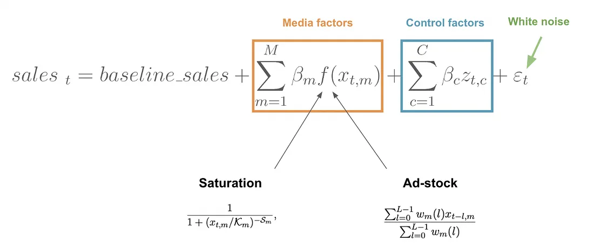
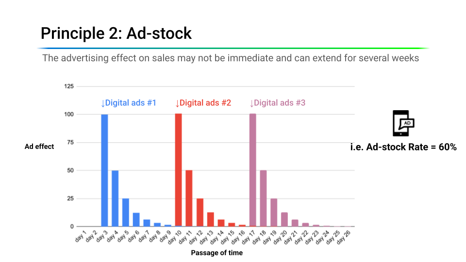
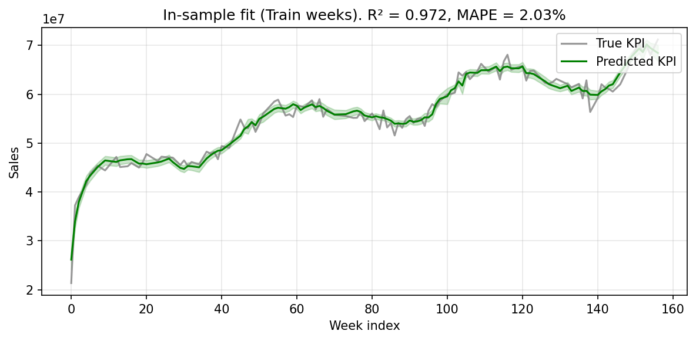
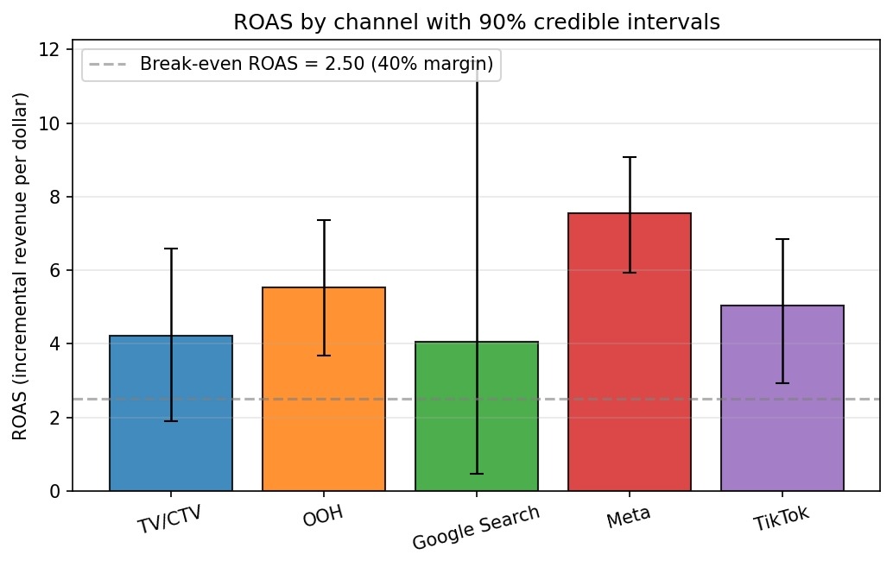

6.2 构建并优化一个 MMM
关于中文版
本页是英文版 Marketing Science in Python 的AI翻译。英文版为正式版本，如有出入，以英文版为准。代码、Notebook 和图片中的文字保持英文。 阅读英文版
什么是营销组合建模？
营销组合建模（MMM）是一种统计方法，它使用汇总的时间序列数据（通常是每周的销售额和分渠道的媒体支出）来估计每个营销渠道对业务成果的贡献。与用户级归因不同，MMM 使用汇总数据，不需要对个体进行追踪，因此在 cookie 消失、App Tracking Transparency 和封闭生态（walled garden）限制面前依然稳健。
MMM 有三个用途：
- 测量：量化每个渠道的贡献和广告支出回报率（ROAS）。
- 模拟：回答“如果……会怎样”的问题，例如把电视广告支出削减 30%，销售额会怎样？
- 优化：在各渠道之间分配固定预算，使预期成果最大化。

MMM 重新受到关注，并不只是出于怀旧。随着用户级追踪越来越不可靠，汇总建模如今已成为测量跨渠道媒体效果最实际可行的方式。
MMM 方程
最简单的形式下，MMM 就是把每周销售额对媒体支出做回归，同时控制节假日、促销和其他非媒体驱动因素：
\[ y_t = \beta_0 + \sum_{c=1}^{C} \beta_c \cdot x_{c,t} + \sum_{k} \gamma_k \cdot z_{k,t} + \varepsilon_t \]
其中 \(y_t\) 是时点 \(t\) 的销售额，\(x_{c,t}\) 是渠道 \(c\) 的支出，\(z_{k,t}\) 是控制变量，\(\varepsilon_t\) 是噪声。

这个简单回归之所以不够用，有两个原因。第一，媒体效果并非立竿见影：本周的一则电视广告仍然会影响接下来几周的购买（延续效应）。第二，媒体效果并非线性：一周内的第一百个 GRP（gross rating point，毛评点，衡量电视受众触达的标准指标）带来的增量比第一个要少（收益递减）。
更贴近现实的模型会在线性组合之前先对媒体输入施加广告滞留效应（adstock，即延续效应）和饱和效应（收益递减）变换：
\[ y_t = \beta_0 + \sum_{c=1}^{C} \beta_c \cdot \text{Saturation}\bigl(\text{Adstock}(x_{c,t})\bigr) + \sum_{k} \gamma_k \cdot z_{k,t} + \varepsilon_t \]

饱和效应（收益递减）
每个媒体渠道最终都会饱和：在一个渠道上花得越多，每多花一美元赚到的就越少。电视广告支出的第一个一百万美元会带来可观的增量销售；第十个一百万美元带来的就少得多。图 4 展示了由此形成的三个区间：投资不足区，每一美元仍在努力工作；最优区间；以及饱和区，追加支出大多被浪费。

Hill 函数是对此建模最常用的方式：
\[ \text{Hill}(x) = \frac{x^S}{x^S + K^S} \]
其中 \(K\)（半饱和点，常称为 EC50）是渠道达到其最大效果 50% 时的支出水平，\(S\)（斜率）控制曲线弯折的陡峭程度。
关于 \(K\) 的一点实践说明：Meridian 用它自己的单位来度量它，媒体按其中位数缩放，广告滞留权重归一化为总和为一，因此一个持续投放的渠道在该尺度上位于 1 附近。演示为饱和效应设置了一个宽的、与渠道无关的先验，偏向弯曲平缓的曲线；在广告滞留效应上保留了按漏斗层级设定的结构；并在 notebook 中展示了对于一个数据无法识别的渠道，这一选择决定了什么。
正是这种曲率使预算重新分配有价值。在 图 5 中，渠道 X 深处于饱和区，而渠道 Y 仍有上升空间。削减 X 的预算会损失 $1M 的销售额，而把这笔预算加到 Y 上则能获得 $3M：在总支出不变的情况下净增 $2M。把预算从饱和的渠道转移到投资不足的渠道，可以提高总回报，即使饱和渠道的平均 ROAS 看起来更高。平均 ROAS 是渠道的总增量收入除以其总支出；边际 ROAS 是渠道当前所处位置上曲线的斜率，它才是下一美元能赚到的回报。

广告滞留效应（延续效应）
广告并不会在停播的那一刻就停止起作用。广告滞留效应（adstock）捕捉的就是这种滞后效应。最简单的形式是几何衰减（Meridian 使用相同的权重，再除以权重之和）：
\[ \text{Adstock}_t = x_t + \lambda \cdot \text{Adstock}_{t-1} \]
其中 \(\lambda \in [0, 1]\) 是保留率。\(\lambda\) 越高，延续效应持续越久。图 6 和 图 7 展示了同样三个投放波次在两种保留率下的表现。在高保留率下（典型如电视这类漏斗上层渠道），每个波次的效果在播出后仍会持续很久，重叠的波次会层层叠加。在较低保留率下（典型如数字渠道），效果在几天内就会消退。


保留率用半衰期来理解更容易，即效果衰减一半所需的期数，\(\ln(0.5) / \ln(\lambda)\)。在周粒度下，电视等漏斗上层渠道通常按数周的半衰期建模，而付费搜索等漏斗下层渠道大约一周内就会衰减。配套演示对每个渠道都采用 12 周窗口的几何广告滞留效应，并按漏斗层级设定衰减先验的中心：TV/CTV 和 OOH 为 6 周（\(\lambda \approx 0.89\)），Meta 和 TikTok 为 3 周（\(\lambda \approx 0.79\)），Google Search 为 1 周（\(\lambda = 0.5\)）。把这些视为有待数据修正的初始先验，而不是事实：公开的指导值各不相同，合适的取值取决于你的品类和数据粒度。把“按周”的保留率套用到日数据上，意味着截然不同的半衰期。
还有更灵活的替代方案。Weibull 广告滞留效应允许衰减形状非单调：效果可以在曝光后几天达到峰值再衰减，这更适合电子邮件或直邮这类天然存在处理延迟的渠道。
数据要求
MMM 需要三类输入数据：
- 目标变量：品牌或产品层面的每周收入或销量。
- 媒体支出：每个渠道（电视、社交、展示、搜索、直邮等）的每周支出。
- 控制变量：节假日、季节性指标、促销、定价变动、竞争对手活动、宏观经济因素，或任何可能解释销售波动的非媒体驱动因素。

推荐的粒度：
- 时间：按周。日数据噪声更大；月数据观测数太少。
- 历史长度：至少 2–3 年的数据（大约 104 到 156 周）。历史更短时，就难以把媒体效果与季节性分开。
- 地理：通常是全国或品牌层面。次全国（地理层面）模型可能更有效，但需要更多数据和更谨慎的建模。
- 渠道：只纳入支出确实有变化的渠道。如果一个渠道每周花同样的钱，模型就无法学到它的效果。
有一项检查与上述要求同属一类，却很容易被跳过。广告滞留效应和饱和效应会平滑一个渠道的贡献，因此媒体对销售额逐周变动的影响，可能反而小于控制变量无法解释的那部分。一旦如此，媒体系数就无法识别，任何先验的选择都无法弥补：估计量已经没有任何东西可以用来把媒体从基线中分离出来。在拟合之前先比较这两个量。配套 Notebook 在 Step 2b 中完成了这项检查。
控制变量之所以重要，还有一个原因：媒体支出和销售额在构造上通常共享趋势和季节性，仅凭一个共同的日历，就足以在两条毫不相干的序列之间制造出强相关。季节性和趋势控制变量正是把这种共享结构挡在媒体系数之外的手段。

贝叶斯视角
在逐步讲解实现之前，有一个设计选择值得注意：现代 MMM 以贝叶斯方法为主。原因是实践层面的，而非哲学层面的。
- 先验编码领域知识。 如果你的团队从过去的实验中知道电视的 ROAS 大约是 2.0，你可以把它编码为先验。模型会用数据更新这一信念。没有先验，模型可能仅仅因为多重共线性就产出不合理的估计。这种便利的另一面值得说明一次：对于一个数据无法识别的渠道，模型返回的数字就是你放进先验的数字。演示中就有这样一个渠道，第 6.3 节会去实际测量它。
- 可信区间，而非点估计。 你得到的不是“电视 ROAS = 2.3”，而是“电视 ROAS：中位数 2.3，90% CI [1.1, 3.8]”。区间很宽意味着，基于该估计做大幅预算调整时你应当谨慎。
- 与实验的自然结合。 当你运行一个地理增量测试并估计出某个渠道的增量效应时，可以把这一证据作为信息先验输入 MMM。这会收紧后验并改善可识别性，我们会在第 6.4 节详细展开这一工作流程。
这就是为什么 Meridian 和 PyMC-Marketing 这类工具在底层使用贝叶斯推断。
有多个开源库实现了本章的概念。使用最广泛的三个是：
| 库 | 特性 | GitHub |
|---|---|---|
| Meridian | Google 推出的基于 Python 的贝叶斯 MMM。对地理层面数据和实验校准支持完善。已弃用的 LightweightMMM 的后继者。 | google/meridian |
| PyMC-Marketing | 基于 Python 的贝叶斯营销建模工具包。涵盖 MMM、CLV 和客户选择模型。灵活，但需要更多建模判断。 | pymc-labs/pymc-marketing |
| Robyn | Meta 推出的基于 R 的 MMM 库。使用 Ridge 回归和 Prophet。适合快速搭建基线模型。 | facebookexperimental/Robyn |
核心概念（广告滞留效应、饱和效应、贝叶斯估计和预算优化）在这三个库中是相同的。本章使用 Meridian，因为它基于 Python 且容易上手：即使不做太多定制，它也能生成关于模型结果和预算优化的精美两页 HTML 报告，可以直接分享给利益相关方。下面的讲解会给出这两份报告的链接。
Meridian 实战讲解
配套 Notebook： sec6.2_6.4_mmm_meridian.ipynb 用 Google 的 Meridian 库演示了一个完整的 MMM 工作流程。
在 GitHub 上查看
数据加载与准备。 演示数据集包含 157 周的销售数据、5 个媒体渠道（TV/CTV、OOH、Google Search、Meta、TikTok）以及节假日/季节性控制变量。Meridian 使用 DataFrameInputDataBuilder 从 pandas DataFrame 构建其输入数据。缩放在内部处理；不需要手动归一化。重要的细节是，Meridian 把饱和效应施加在 media_cols（曝光量，例如展示次数或点击次数）上，而 media_spend_cols 则作为计算 ROAS 的成本基础。
channels = ["TV/CTV", "OOH", "Google Search", "Meta", "TikTok"]
media_cols = [
"tv_ctv_impressions", "ooh_impressions", "google_clicks",
"meta_impressions", "tiktok_impressions",
]
media_spend_cols = [
"tv_ctv_spend", "ooh_spend", "google_spend",
"meta_spend", "tiktok_spend",
]
control_cols = [
"seas_sin52", "seas_cos52",
"hldy_thanksgiving", "hldy_christmas",
"trend", "trend_sq",
]
builder = data_frame_input_data_builder.DataFrameInputDataBuilder(
kpi_type='revenue',
default_kpi_column='sales',
default_time_column='time',
default_geo_column='geo',
)
data = (
builder
.with_kpi(df)
.with_media(df,
media_cols=media_cols,
media_spend_cols=media_spend_cols,
media_channels=channels)
.with_controls(df, control_cols=control_cols)
.build()
)模型训练。 Meridian 使用 No-U-Turn Sampler（NUTS）进行 MCMC。我们先从先验抽样做合理性检查，然后再对后验抽样。
mmm = model.Meridian(input_data=data, model_spec=model_spec)
mmm.sample_prior(500)
mmm.sample_posterior(
n_chains=4, n_adapt=500, n_burnin=500, n_keep=1000, seed=SEED
)
# Production runs typically use n_chains=10, n_keep=2000 (≈ 5× compute).诊断。 Meridian 的 ModelReviewer 会运行自动化的质量检查（收敛性、基线验证、拟合优度，以及先验到后验的偏移），并报告通过/待审查/失败的状态。

模型拟合。 随机留出 25% 的周作为验证集，演示得到的样本内 R² ≈ 0.97，样本外 R² ≈ 0.97。样本内外差距很小在这里是意料之中的：合成数据加上随机（插值式）留出集，接近最理想的情况。在带有真实噪声、趋势断裂期和不规则促销活动的生产数据上，样本外 R² 落在 0.6 到 0.7 之间是常见且可以接受的。要相信媒体估计的方向，而不只是表面的拟合指标。
既然第 5.3 节断然拒绝随机划分，这里为什么用随机留出？预测必须外推到训练窗口之外，所以要从一个固定的起点向前评分。而 MMM 是在它已观测到的时期内为销售额分配功劳，所以分散的留出集问的正是有用的问题：拟合出的结构在似然从未见过的那些周上是否依然成立。把这个数字读作插值诊断，而不是模型能预测下个季度的证据。


媒体洞察。 模型为每个渠道给出带可信区间的 ROAS 估计。区间宽意味着存在真实的不确定性：这是特性，不是缺陷。单看点估计可能产生误导；可信区间显示了你应当对结果抱有多大信心。


你不必一张张地构建这些图表。只需一次调用 summarizer.Summarizer(mmm).output_model_results_summary(...)，就能生成一份可直接交给利益相关方的两页 HTML 报告，涵盖模型拟合、渠道贡献、带可信区间的 ROAS 和响应曲线。看看配套 Notebook 生成的那份：summary_output.html。
预算分配
模型的三个用途（测量、模拟、优化）在这里汇合。响应曲线拟合好之后，优化器会在固定预算约束下搜索使预测 KPI 最大化的分配方案：
budget_optimizer = optimizer.BudgetOptimizer(mmm)
optimization_results = budget_optimizer.optimize()这与 图 5 中的饱和逻辑相同，只是现在应用于整个媒体组合而不是两个渠道：优化器把预算转向下一美元仍能发挥最大作用的渠道。

优化器提供了同样便捷的报告功能：optimization_results.output_optimization_summary(...) 会生成一份关于推荐重新分配方案的两页 HTML 报告（optimization_output.html）。
在演示中，优化器在五个建模渠道（TV/CTV、OOH、Google Search、Meta 和 TikTok）之间重新分配支出，把预算从边际响应曲线更平坦的渠道转向剩余上升空间更大的渠道。总预算保持不变；只有组合发生变化。团队首次实施 MMM 时，仅靠重新分配就让媒体驱动的（增量）销售额提升 5–10% 是很常见的；本演示显示约 +3%，折合总销售额大约 +1.2%。
在优化器和计划之间还有一条规则。优化器根据后验均值移动预算；计划则应当根据模型真正知道的东西来移动。因此 notebook 对优化器所用的量，即边际 ROAS，施加了一条防护线：如果一个渠道 90% 区间的相对半宽超过 0.8（区间宽度的一半除以估计值），无论推荐的调整幅度多大，都维持其当前支出。区间很宽，就是模型在说它尚未识别出该渠道，而对此的回应是拿出证据，而不是下更大的注。这是一条示例性的治理规则，不是普适的统计阈值。在演示中，它放行了推荐调整量的 74%，并冻结了一个渠道。
把优化器的输出当作规划的起点，而不是最终的媒体计划。模型没有考虑合同、最低支出水平、运营前置时间等现实约束。这些需要另外叠加进去。而且在本演示中，它给出了一条自己无法辩护的建议。notebook 展示了支撑它的依据有多薄弱：只改动饱和先验，从这里使用的那个换成 Meridian 的默认值，Search 的建议调整就会从削减 30% 反转为增加 30%，而两次拟合都不能通过宽度规则。历史数据不能决定方向；这项建议的削减需要实验证据。
| 待验证的决策 | 值 |
|---|---|
| 渠道 | Google Search |
| 优化器 | −30%，固定在约束下限 |
| 防护线 | HOLD，区间过宽：边际 ROAS [0.36, 9.51]，相对半宽 1.39 |
| 测试前预测 | 削减 30% 后，8 周内每削减一美元损失 $2.95 的收入，90% 可信区间 [0.34, 8.48] |
| 建议的测试 | 在 8 组匹配的地理配对中把 Search 削减 30%，持续 8 周 |
| 决策规则 | 若 95% CI 上限低于 2.50（按 40% 利润率计算的盈亏平衡点），则削减 |
预测在此刻、在任何结果出现之前就已记录下来，这样实验既能给渠道打分，也能给模型打分。由于响应曲线是基于观测数据构建的，下一步就是验证这一条。第 6.3 节设计并分析该实验；第 6.4 节把结果反馈回模型。
要点
- MMM 从汇总时间序列中估计渠道贡献，因此不受 cookie 消失和封闭生态的影响。它需要周数据、两到三年的历史，以及每个渠道真实的支出变化。
- 广告滞留效应和饱和效应把支出转化为响应曲线，而这条曲线正是你应当按边际回报而非平均回报分配预算的原因。一个平均 ROAS 很高的渠道可能已经饱和。
- 对于数据无法识别的渠道，模型返回的就是你给它的先验。冻结那些区间宽到无法辩护的建议，记录模型的预测，然后去测量它。